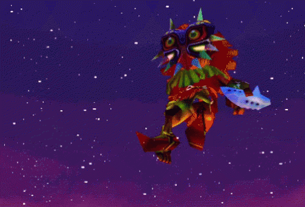
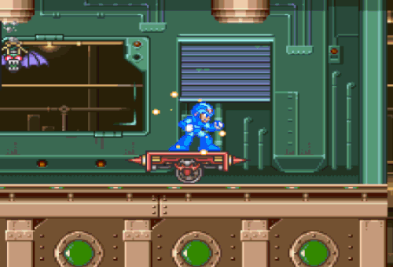
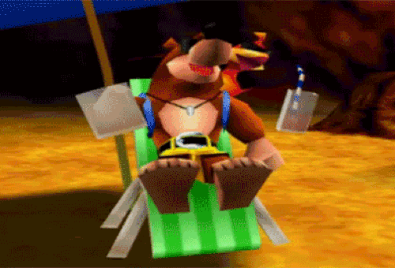

Retro Games I love
Retro gaming, also known as classic gaming and old school gaming, is the playing and collection of personal computers, consoles, and video games from earlier decades. Usually, retro gaming is based upon systems that are outmoded or discontinued, although ported retro gaming allows games to be played on modern hardware via ports, emulations or compilations. It is typically for nostalgia, preservation, or authenticity. A new game could be retro styled, such as an RPG with turn-based combat and pixel art in isometric camera perspective, as well as chip-tune styled music.


